This data dictionary describes the main data tables
comprised in your SOS (Practice Manager & Connect) database. These tables include fixed and maintainable information that you
are capable of entering into PM or Connect plus any transactional information
generated as a by-product of running any posting or update procedures.
Database connection screenshots, data type names and query
formula samples are all taken from Crystal Reports, but allowing for
differences in terminology this dictionary should also prove useful in
conjunction with other ODBC-enabled reporting tools such as Microsoft’s Excel
(with Query add-in) and Access.
A few of the tables you will see in the Data Explorer window
are not described in this Dictionary either because they are not yet used by Practice
Manager, or because they are no longer used by Practice Manager, or because
they are system “infrastructure” which
do not contain user-specific data likely to be of interest for reporting
purposes.
This is the
connection mode for users who have a Windows
database server. Tables are located
under the PUB drill down
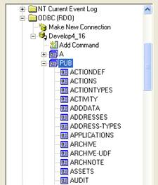
Certain tables include special multi-value fields called
“extents” which store information as an
array ie a succession of items separated
by commas. Everyday examples
include the 13 successive Period End
dates in the BRANCH or NOMACCS tables,
and the 13 successive Period Client Balances in the MATANALYSIS
table. Note that all “extent” elements have an @number suffix for Progress
v9 users:
However, the Table
field list will show just one
field called BAL-CLI which if placed on a report would show all 13 separate period balances
strung together and separated with commas
– unhelpful for reporting purposes.
For users with this type of connection SOS provides an alternative field
list called a “view” which will show all the separate elements:
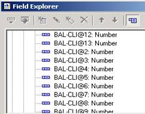
Database
Expert Screen:
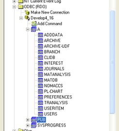
Views
are show under the “A” drill down.
CHOOSING
BETWEEN VIEWS OR TABLES
If your report needs period end dates and balances then a
table “view” rather than a table will
have to be selected from the database list.
For example if your report needs to report on, or accumulate period
nominal accounts balances then you will need the view NOMACCS (under ‘A’) in
your report rather than the table NOMACCS (under ‘PUB’).
However, if you only need certain fields in a table that are not part of a field extent, then the normal table should be used. For example if you needed to access your firm’s period end dates, which are held in the BRANCH table, you would need the view BRANCH – but if you only want BRANCH to retrieve the branch’s description then you could just as well get the information successfully from the permanent table PUB.BRANCH.
Each table has been set out in the form of a grid to show:
Field names
Where the data can
be seen and description of the field’s
content
Data type and
maximum viewable length if a string type
Field names have been set by SOS and efforts have been made
to make them as meaningful as possible.
Note that field names recurring amongst
different data tables usually bear the same field name: for example the Fee Earner’s code appears in many tables such as NOMTRANS,
TRTRANS, MATDB but it is always called FEE-EARNER. However, there are some anomalies and
deviations from this ideal and these are described where necessary in the table
notes. For example (of interest to
multi-branch firms) the branch code found in NOMTRANS or MATDB is called
BRANCH, but in the BRANCH table itself it is actually called CODE.
Conversely, there are fields bearing the same name
amongst different tables that may have entirely unrelated content. For example, the DATE-OPENED field in the
Client details table CLIDB can obviously differ from most or all of the
various DATE-OPENED field values in
MATDB, the client’s matter records.
DATA TYPES
These are one of the four data types
recognised by Crystal Reports viz:
Strings
and memos
Date
Boolean
The
Number data type
can represent either an integer or a decimal.
Other reporting programs may call these fields Integer or Floating
instead of Number. Note that even if
they are stored by Practice Manager as integers ie whole numbers, they will by
default be displayed in
The
String type may
contain any characters that are capable
of being typed in from the keyboard, including
spaces. Users should note that the
flexibility of the String field for reporting purposes is very limited in the
rare case of a field defined to be 255 characters or longer.
The
Date
type will be converted into
You can set your preferred
date format globally for any report by selecting File then Options then Fields
then Date. Alternatively you can format
individual date fields by right clicking the field then selecting the Field
Format function.
All these conversions are
performed by
The Time - Every table has a MOD-TIME field which represents the
time at which the table was last updated.
However this is simply an integer of the number of seconds that have
elapsed since the start of the neighbouring MOD-DATE field so you will need to apply a formula to this
field to convert it into a familiar-looking time of day.
Here is a suitable formula using
standard
NumberVar Hrs;
NumberVar Mins;
NumberVar Secs;
StringVar AMorPM;
Hrs:=Truncate({NOMCODES.MOD-TIME}/3600,0);
Mins:=Truncate(({NOMCODES.MOD-TIME}-(Hrs*3600))/60);
Secs:={NOMCODES.MOD-TIME}-(Hrs*3600)-(Mins*60);
if Hrs>11 then
AMorPM:="PM"
else
AMorPM:="AM";
if Hrs>11 then
Hrs:=Hrs-12;
ToText(Hrs,"00")+"
: "+ToText(Mins,"00")+":"+ToText(Secs,"00")+"
"+AMorPM;
You can simplify this if you
only need the time in 24 hour format.
Note
that Practice Manager and earlier reporting tools such as Report Builder
use the question mark ? symbol conventionally to represent an empty Date
field. Even now you can enter a ? into a
report set-up date range box in Practice
manager to blank out any slashes and/or date already there. However,
IsNull ({MATDB.DATE-CLOSED})
rather than ({MATDB.DATE-CLOSED})=?,
which
The Boolean type may instead be called
the Logical type in other products.
It contains one of only two possible values and can therefore be
used to represent alternative states such True or False, Yes or No, Zero or
1. From the computer or programmer’s
view point it is the ultimate in economy because it occupies only 1 single byte
of computer memory or disk storage which is far less that the space needed even
for single text characters like Y or N,
or the numbers 0 or 1. For
example we use Boolean fields to
distinguish between current fee earners and fee earners who have left (FEETR.CURR),
or live accounts postings and postings that have been undone
(NOMTRANS.UNDONE-FLAG). But a Boolean
can’t be used to represent information that could have more than two possible
values. For example, in the very first table listed, ACTIVITY, the
field ACTIVITY.LA_CLASS will have 1 of 7 possible values, so Practice Manager
has had to define this field as a Number instead.
For developers using Crystal Reports, a Boolean field value is “seen” as either True or False. For example, to produce a list of bills delivered that have since been
undone you would create a selection
formula that includes:
{NOMTRANS.TRANS-TYPE}=
”BC” and {NOMTRANS.UNDONE-FLAG} = true
Similarly for
bills that have not been undone this would become
{NOMTRANS.TRANS-TYPE}=
”BC” and {NOMTRANS.UNDONE-FLAG} = false
However there
is an even simpler syntax to replace true ie
{NOMTRANS.TRANS-TYPE}=
”BC” and {NOMTRANS.UNDONE-FLAG}
and to
replace false
{NOMTRANS.TRANS-TYPE}=
”BC” and not{NOMTRANS.UNDONE-FLAG}
Boolean fields are generally useful
“behind the scenes” for testing or filtering in/out certain data, but you
wouldn’t usually want to display their values in a finished report: the reasoning is that if you have used one as
a report filter then the chances are that in the included records that field will in every record have the same
True or False value. If you do wish to
report on the field itself then by default the value True or False will be
shown. The full list of options is:
True
or False, T or F, Yes or No,
Y or N, 1 or 0
To set your preferred option globally
select the File menu then Options then Fields then Boolean from the Crystal
Report Designer window. Alternatively
you can set or vary individual fields by right clicking the field then
selecting Field Format.
·
It
provides a rough and ready but effective means of learning more details of the
data dictionary while you are working
·
It
provides you with an early warning as to whether the fields you are picking are
taking you down the right or wrong track for the report you are developing
In Crystal Reports, data can be browsed in any of three places:
in the Database
Expert Links tab (
in the Field
Explorer (
A completely empty Browse window usually means that there is
a total absence of data in that field for your firm, or more generally that the
field has not actually been used by the Practice Manager software. If you are at all concerned at such a
result then create the simplest of reports by placing that field alone in the
report and then preview it for any sign of data. Sometimes there will be data near the
physical end of a table which is not apparent in the Browse window, because the
Browse function only scans the first few hundred records in a table.
FIELD NOTES
This discusses any unusual features that may not be obvious from the tabular information or from the Practice Manager interface.
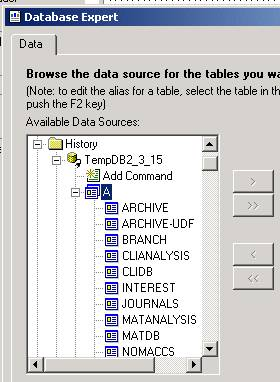 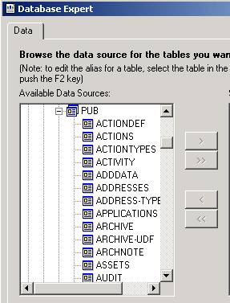
Your database list is headed with Views as per the
screenshot on the left, followed by the
longer list of tables as shown in the right hand screenshot.
Most useful and presentable reports inevitably demand data from more than one table and Crystal provides its Visual Linking Expert enabling you to join these tables. The Expert provides a columnar graphic representation of the table and links between tables are forged simply by dragging your mouse or other pointing device between fields you wish to link. Crystal Reports does not offer an alternative non-graphical method of linking data tables.
The tables and their contents are represented on screen in a
tabular format and by default will display the first 10 fields only. However you
can drag the table object borders vertically, to show more field names or
horizontally, to display more field description if otherwise truncated by
default. However note that the number
of tables and fields that are visible is also dictated by your screen
resolution. The higher the resoution, the
more you will be able to squeeze in.
Before attempting multi-table linking from scratch we
suggest you open any standard Practice Manager
report and have a look at a ready made example by running Database à
Database Expert then click on the Links tab.
Disabling “smart” linking
By default
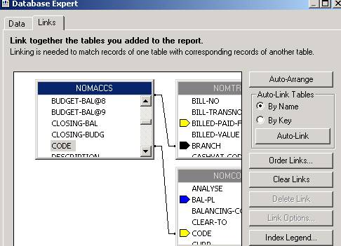
These can be selected either by right clicking on the visual
link between the tables or by left clicking on the visual link then the Link
Options button offered. The only option
available to ODBC users like yourselves is to select the SQL Join Type:
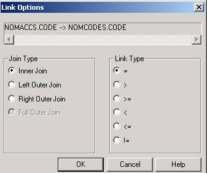
The Join Type is always Equal by default. If tables are linked with an Equal join then
records will only be retrieved for a report if there are records with the
lookup field in both tables. However,
with a Left Outer join, records will be
retrieved from your designated primary table whether or not there are matching
records in the lookup table.
The direction of the join is determined by which field you
start to drag the visual link from. Linkage leaves an arrow trace and the table at the base of the arrow becomes your primary table and the table at
the head becomes your lookup table.
The arrow can link just one pair of fields. Subsequently right-clicking the linking
arrow offers the option to reverse the link if desired.
If your tables are joined with an SQL Equal join (the
default) then the direction of the join makes no difference to the final tally
of records retrieved, though the efficiency and hence speed of the report could
be significantly different. However, if
you intend to utilise a Left Outer join
(see next paragraph) then reversing a link can imply quite a different
report. Note that if you choose to reverse a link which is
already a Left Outer join, it will automatically revert to an Equal join, so
you may then have to consider re-setting your join option.
The simplest practical example of how this works in practice
is to consider our first example below ie a report using CLIDB and MATDB
only. If you leave the tables joined
with an Equal join then irrespective of any filters you wish to apply to the
CLIDB records, your report will only find clients who have at least one
matter. Any clients with no matters at
all will simply not appear on your report even if they would otherwise pass any
other filtering requirement you impose. If
however you change the join to Left Outer, then subject only to your
CLIDB record selection filters, all clients will appear in your report whether
they have matters or not.
Note that the browse
window also reminds you of the field’s data type. This is important because it would not be normal for you to join fields of different
data types – ie there is usually no logical reason for you to link tables by
joining say a Number field in one table to a String field in another.
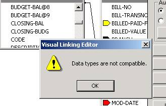
If you cannot
see the link arrowhead or the identity of the lookup field then simply use the
lookup table’s vertical scroll bar to locate it.
The following
examples are basic “building blocks” for more elaborate reporting and can of
course be joined to one another as needs be.
·
Static
Client and Matter information: CLIDB to MATDB
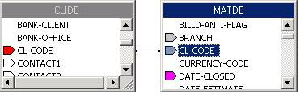
This is one of the commonest links in Practice Manager reports used wherever you want to see matter details accompanied by client names. Note that CL-CODE is the only usable link field. This gives you access to most non-balance information about your clients and matters (apart from additional information held on Custom Tabs).
·
Client and Matter Current Balances
MATAC holds current matter accounts balances and MATTR holds current time /Work in Progress balances. There is one MATAC and one MATTR record for each matter, created at the same time as MATDB ie when the matter is opened in Practice Manager.
Note that although MATAC and MATTR
contain their parent client code in the CL-CODE field they should never be
linked to one another or to MATDB on this field, as this would unintentionally
retrieve enormous numbers of duplicate records wherever a client has multiple
matters. The reason for repeating the
CL-CODE field in MATAC and MATTR is to allow the possibility of reporting on
individual matter or aggregate client balances without necessarily including
the textual or static information held in MATDB. The
golden rule is that all matter tables link simply on their MT-CODE field.
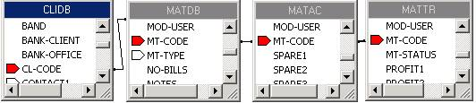
·
Matter Accounting and Time recording
historic balances
Historic balance information is held in the MATANALYSIS table on a period by period basis and there is also a separate MATANALYSIS record for each financial year in which there has been time or accounting activity on the matter. The procedure for calculating a balance at a requested period end is therefore quite complicated and is as follows:
1 Retrieve all MATANALYSIS records for years prior to and including the requested year
2 For each year’s MATANALYSIS record prior to the requested year add all the period activity fields ie periods 1 to 13 inclusive
3 For the requested year add together the period figures from period 1 up to and including the requested period
This is the method used to create the standard Period Balance options of the Matter Accounts and Matter Time balance reports.
See Practice Manager standard reports RPMACPER or RPMTRPER for more details of these methods. Note there is no practical and reliable method of calculating historic balances up to a given date other than where the date coincides with a period end.
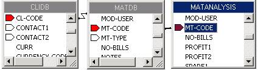
·
Matter Fee Earners and Matter Type details
Although fee earners and matter types are identified in code form in matter records these become difficult to follow when there are a great number of them so you may well want to see their full descriptions ie FEETR.NAME and MATTYPE.DESCRIPTION:
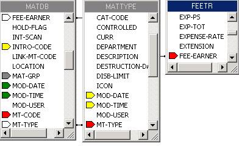
·
Client Matter Accounts Postings
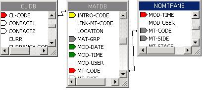
This is again a very common arrangement in many standard Practice Manager reports. It provides access to all client matter accounts postings, though in practice this would be cut down in the report’s record selection formula to a narrower range of transaction types.
For example, the Aged Disbursement Report RPAGEDIW is confined to NOMTRANS whose NL-CODE field is either X05 or X15, while the Bills Delivered Report RPBD will be confined to NOMTRANS records whose NL-CODE is X08.
Note that individual bills may be spread over two or more NOMTRANS records, so that to retrieve bills paid or outstanding information your report will have to group these records according to their transaction number ie NOMTRANS.TRANS-NO. Again, open and examine a standard report such as RPBD to see how details of individual NOMTRANS bill parts are in a “hidden” detail section so that the aggregate bill information has to be represented as a summary at report grouping level.
·
Client Matter Time Postings
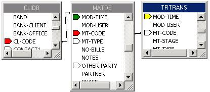
This is similar to the previous example, but providing details of time postings and also time billings rather than accounting entries. The standard Fee Earner Work in Progress report RPFEWIP provides a good simple example for you to study.
INDEXES AVAILABLE
Each table description below provides a brief list of index files, provided by SOS to improve access to the data both within Practice Manager and when using tools such as Crystal Reports to extract data from your database. A table may have one or more indexes.
Index fields are also automatically marked in all the Database Link diagrams with the symbol in a range of colours.
Two useful rules to observe here:
· When you create a link between any two tables then as far as possible ensure the linked fields are indexed fields in both tables. For example the standard way to join the CLIDB table to the MATDB table is to link on the CL-CODE field in each table. For this reason the CL-CODE field is an index field for both of these tables
· If you create a Record Selection formula to filter the incoming data, try to make an indexed field the very first one of the primary conditions for selection. This will produce a noticeably faster report when you are looking at a typically large table such as NOMTRANS.